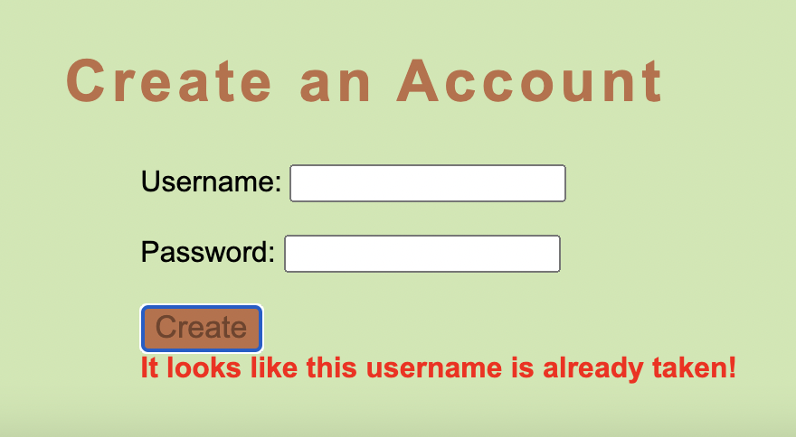
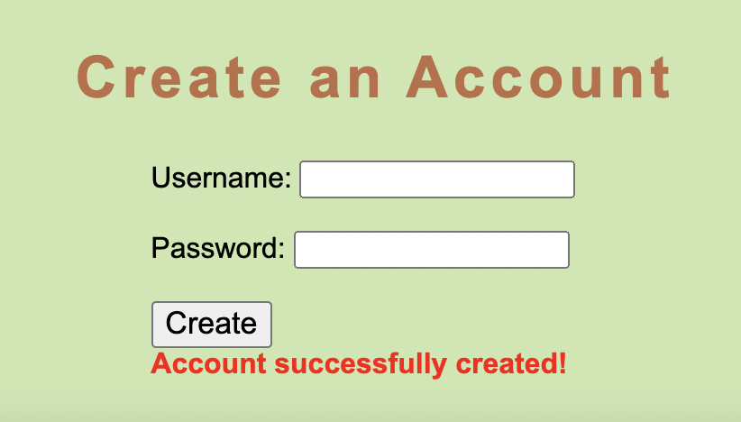
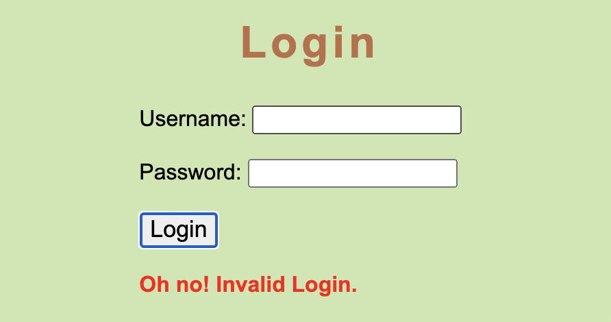

To create an account, pick an avaliable username and preferred password. If the username is already taken by an existing user, you will have to pick another one.
If the username is avaliable, you account will be created and you will be able to login!
After creating your account, you can successfully log into your account. If your account exists, you will be redirected to the home page. If not, you will get a message saying that the account does not exist. If this happens, check your credentials to make sure everything is spelled correctly. Otherwise, create a new account and try again!
